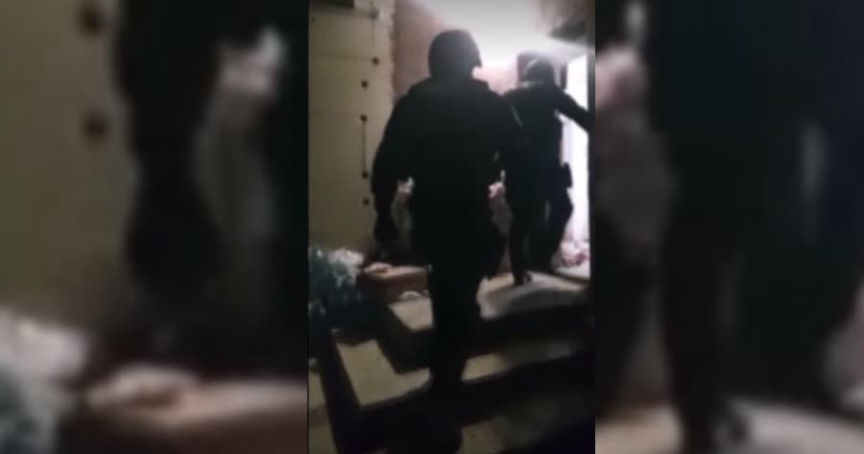
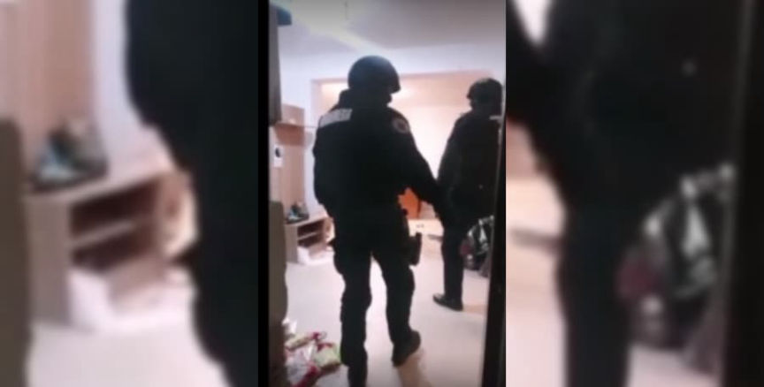
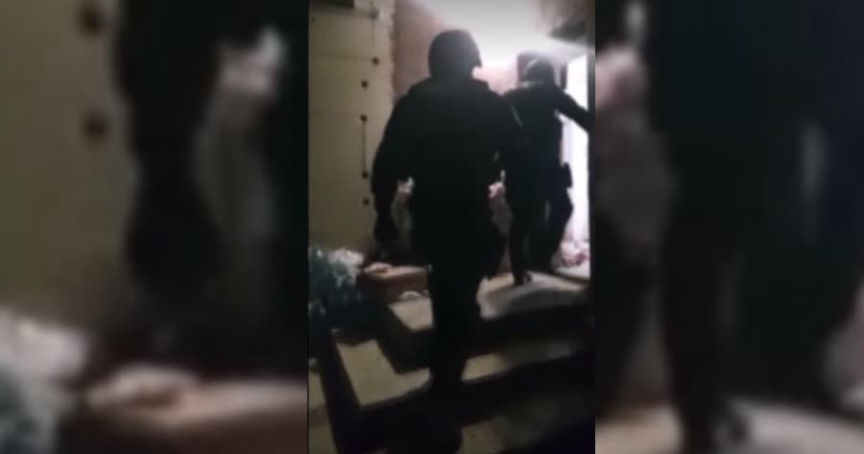
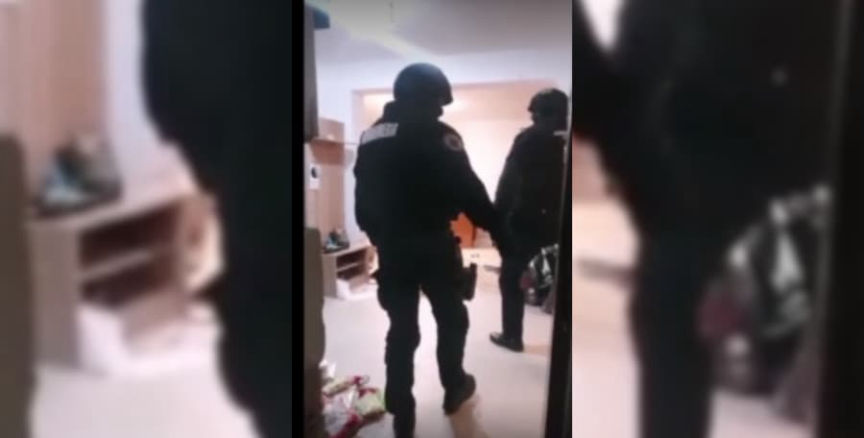

Romania: Five Arrested for Running Murder-for-Hire Scams
~2 min read | Published on 2022-04-07, tagged Arrested, Murder-for-Hire using 349 words.
Romanian law enforcement arrested the alleged operators of fraudulent murder-for-hire sites.
Police in Romania arrested five people for inciting murder, money laundering, and organized crime charges. According to a press release from the Directorate for Investigating Organized Crime and Terrorism (DIICOT), the suspects operated fake hitman sites on the darkweb.
Police with the DCCO - the Service for Combating Cybercrime searched seven houses in Gorj and Hunedoara and arrested five alleged operators of the fake murder-for-hire sites. Investigators seized 18 mobile phones, ten laptops, 15 memory sticks, seven bank cards, 13 HDDs, an electronic wallet, a DVR, and various documents during the searches.
The arrests were conducted at the request of United States law enforcement.
“Authorities in the United States of America has determined that this group consists of five or more persons located in Romania, who acted in a coordinated manner to administer those sites and to launder money obtained as a result of instigating crimes.”

Representatives of Homeland Security Investigations and the US Embassy in Bucharest were present for the activities. According to the announcement, the suspects allegedly scammed would-be customers out of 500,000 euros ($543,842).
“Yura,” the fraudster behind dozens of contract-killing sites, including Besa Mafia, Costa Nostra, and Crimebay, likely lives in Romania. Chris Monteiro, the “vigilante hacker” who has been hacking darkweb murder-for-hire sites since at least 2016, linked Yura to an IP address in Romania. Santosh Sharma, a freelancer who once did SEO work for Yura, said, “[Yura] was based in Romania.”
It seems probable that police raided people with an alleged connection to Yura’s sites and possibly Yura himself. However, the UK’s National Crime Agency and Bulgarian police seized Crime Bay in May 2017. Monteiro stopped hearing from Yura and assumed the police had arrested him. But Yura returned in December 2017 and later launched Cosa Nostra. So, who knows.

Monteiro believes Yura earned $6,539,800 vs. the estimated $543,842 listed in the press release. Seems like a significant discrepancy.
archive.is
Police in Romania arrested five people for inciting murder, money laundering, and organized crime charges. According to a press release from the Directorate for Investigating Organized Crime and Terrorism (DIICOT), the suspects operated fake hitman sites on the darkweb.
Romanian police arrested five suspects at request of authorities in the US.
Police with the DCCO - the Service for Combating Cybercrime searched seven houses in Gorj and Hunedoara and arrested five alleged operators of the fake murder-for-hire sites. Investigators seized 18 mobile phones, ten laptops, 15 memory sticks, seven bank cards, 13 HDDs, an electronic wallet, a DVR, and various documents during the searches.
The arrests were conducted at the request of United States law enforcement.
“Authorities in the United States of America has determined that this group consists of five or more persons located in Romania, who acted in a coordinated manner to administer those sites and to launder money obtained as a result of instigating crimes.”

Bratva Mafia is a new and unimproved version of Besa Mafia.
Representatives of Homeland Security Investigations and the US Embassy in Bucharest were present for the activities. According to the announcement, the suspects allegedly scammed would-be customers out of 500,000 euros ($543,842).
“Yura,” the fraudster behind dozens of contract-killing sites, including Besa Mafia, Costa Nostra, and Crimebay, likely lives in Romania. Chris Monteiro, the “vigilante hacker” who has been hacking darkweb murder-for-hire sites since at least 2016, linked Yura to an IP address in Romania. Santosh Sharma, a freelancer who once did SEO work for Yura, said, “[Yura] was based in Romania.”
Bratva Mafia is a new and unimproved version of Besa Mafia.
It seems probable that police raided people with an alleged connection to Yura’s sites and possibly Yura himself. However, the UK’s National Crime Agency and Bulgarian police seized Crime Bay in May 2017. Monteiro stopped hearing from Yura and assumed the police had arrested him. But Yura returned in December 2017 and later launched Cosa Nostra. So, who knows.

Monteiro believes Yura earned $6,539,800 vs. the estimated $543,842 listed in the press release. Seems like a significant discrepancy.
archive.is